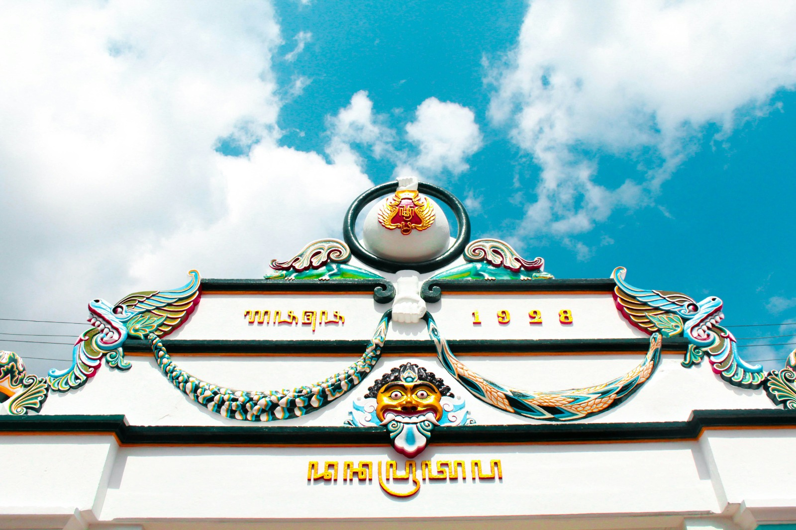
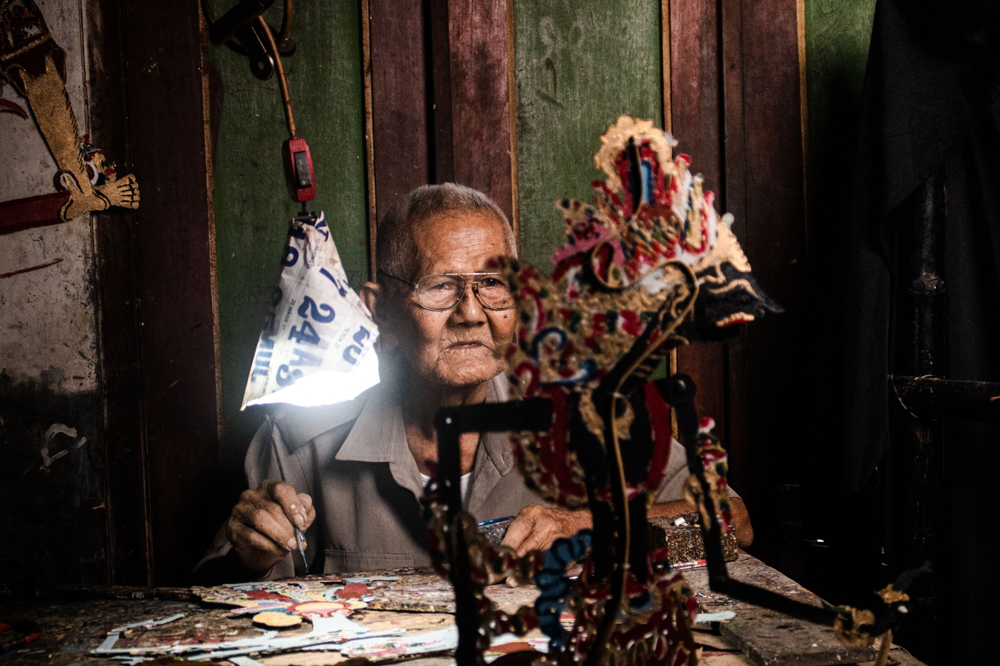

Budaya
Mempelajari kekayaan budaya Yogyakarta yang kaya akan tradisi dan warisan.

Budaya Keraton & Tradisi Adat
Jantung kebudayaan Jogja yang bersumber dari Keraton Ngayogyakarta Hadiningrat. Budaya ini mencakup berbagai upacara sakral dan tradisi rakyat yang dipelihara hingga kini, seperti Grebeg (perebutan gunungan hasil bumi), Sekaten, dan Labuhan.

Seni Pertunjukan Klasik Wayang
Warisan seni pertunjukan tradisional Jawa yang memadukan cerita filosofis, musik, dan gerak. Contoh utamanya adalah pertunjukan Wayang (kulit dan orang), Sendratari Ramayana di Prambanan, serta alunan Gamelan yang menjadi pengiring berbagai acara adat.

Kerajinan Kriya Tradisional
Seni kerajinan tangan khas Jogja yang mendunia dan memiliki nilai estetika tinggi. Identitas ini diwakili oleh Batik Tulis khas Jogja dengan warna sogan dan motif bernilai filosofis, serta Kerajinan Perak Kotagede dengan ukiran detailnya.